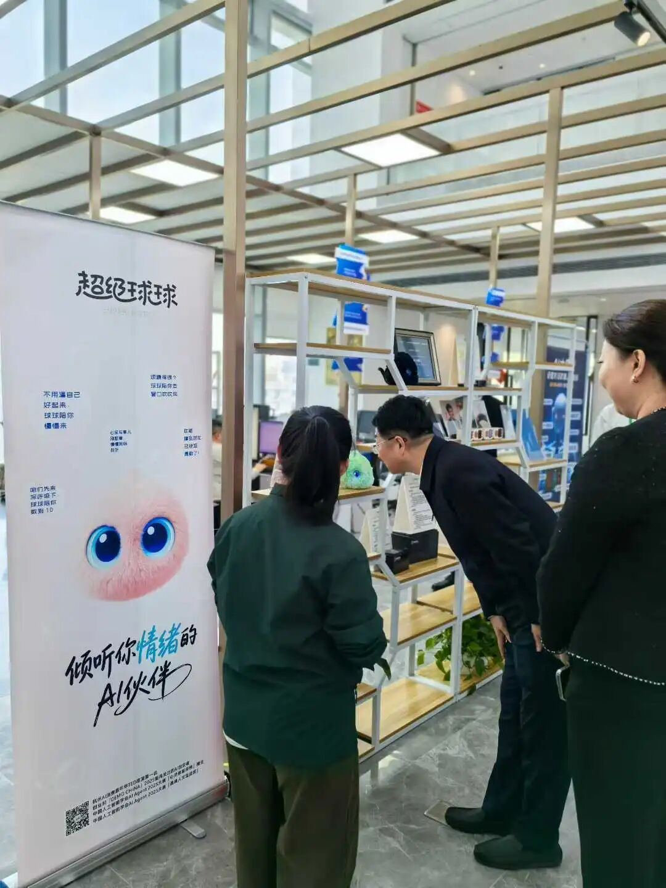
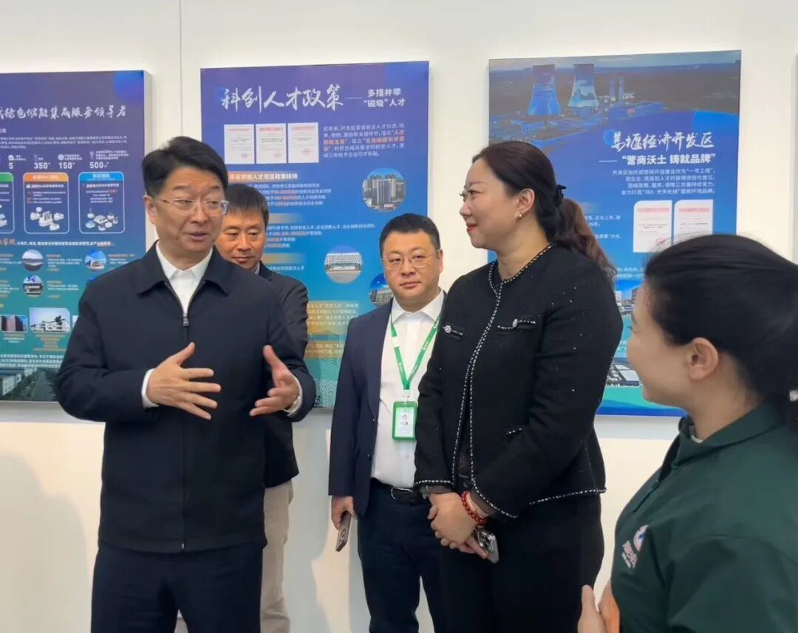

了解到“超级球球”是通过对话帮助⽤⼾纾解负⾯情绪的AI机器⼈，钱军区⻓很有兴趣地与球球进⾏了对话体验。当钱区⻓问：“球球，我今天不太开⼼，怎么办啊？”球球⽴刻以共情的⽅

式给出回复：“听到您说今天不太开⼼，球球好⼼疼呀，给您讲⼀个温暖的⼩故事，让⼼情慢慢好起来吧！”软萌可爱的声⾳，引发⼤家哄堂⼤笑。
在多轮对话之后，钱军区⻓也就球球情绪疗愈的体验，给出了⾃⼰的建议，并与有爱智能创始⼈元晓帅博⼠交流，了解项⽬情况和产品研发进展，并⿎励团队把产品做精做好。
元博⼠表⽰，钱军区⻓的建议都⾮常中肯，有爱智能⼀定会坚持深⼊产品研发，把为⽤⼾创造良好的使⽤体验放在第⼀位，做好⽤AI赋能⼼理健康服务这件事。
